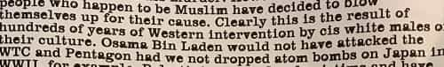

Recently, “The Antifa Manual” was found at Evergreen College, America’s most pozzed-out campus possibly excepting Columbia and Berkeley. It doesn’t go into urban guerrilla tactics (which would’ve been an informative read), but it does focus on ideology and offers an eye-opening look at the type of world they want.
It’s not really an official document; Antifa is too decentralized for those. Thus, one could object that the unnamed author doesn’t speak for all of them. However, apparently this is someone intimately familiar with their rhetoric and goals.
What is Antifa?
They represent an alliance of convenience between Anarchism and Communism, symbolized by a red flag covering a black flag. Anarchy does have a following, which is at its most workable in the very broadest sense of local authority. However, as for the traditional meaning of no government whatsoever, that stuff is for failed states and fourteen year olds. Still, these guys should study history and see how well Anarchists and Communists got along during the USSR’s early days and the Spanish Civil War’s later days.
Many Antifa cells became notorious for staging violent counter-demonstrations using improvised weapons. They’re sometimes known for recruiting from the homeless, appear to have a cult-like environment, and wish to make the USA ungovernable. According to a former member, hard drug usage is commonplace. All told, violent cells act as radical leftist paramilitary gangs.
Who they consider enemies

Wedgie time for fierce Red Guard at Berkeley
As their name indicates, they oppose fascism. The definition of fascism is debatable; myself, I’d take Mussolini’s Doctrine of Fascism as a starting point. However, apparently some Antifa members have their own special definition.
The front page begins:
Do not distribute to any cis[gendered] white males non PoC [people of color] non-LGBTQ peoples a.k.a. fascists.
So there you have it—every straight white guy is a fascist. Anarchists such as Mikhail Bakunin and Peter Kropotkin fall into this very broad category; likewise untold numbers of mainstream liberals like Al Gore and Bernie Sanders.
Warnings to keep the document secret appear twice elsewhere. That’s rather curious; normally, political manifestos are made available to the public as widely as possible. What kind of movement wouldn’t want to say what they’re all about, loudly and proudly? It’s advertising, right?
Their motives

Res ipse loquitur
After the opening, the first topic of discussion is “White Privilege”. It begins stating that the printing presses, newspapers, and TV were always controlled by white guys. Curiously, no complaints are made about the press in Japan, China, and Korea being Asian-dominated, but there I go being a spoilsport. Then this:
Some of our kind have begun to infiltrate high-level positions of power in major media organizations.
Later parts of the document further emphasize taking over the media. Its author should meet the toxically leftist journalism students I attended college with, doing their part to push MSM bias since these Antifa dopes were dirtying diapers. They certainly weren’t the first batch of media manipulators either!
And of course … the new king of idea dissemination is Social Media.
Here we have some truth at last. If social media didn’t exist to discuss things the MSM was conveniently ignoring, then Hillary would be President. Today’s increase in censorship is only about thought control—despite the pretext—but all that’s another matter.
Check it out, someone took a sociology class!
The rest is basically the same guilt-tripping baloney that impressionable students have been indoctrinated with for decades. People like me are a bunch of warmongers who’ve done no good for the world, blah blah blah. (If that’s simply our nature, then why are we supposed to feel guilty about it?) Apparently the writer never heard of peaceful folks like the Mongol Golden Horde, the Aztecs, Shaka Zulu, or the Imperial Japanese army.
Tips on rhetoric
The next section, “Creating a Culture of Tolerance”, states:
Every idea critical of our movement or our way of thinking must be condemned as: racist, homophobic, misogynist, etc.
Then it recommends deploying the reductio ad hitlerum when losing an argument. Dissenting minorities must be silenced, because they don’t know what’s good for them. As for dissenting whites, a later section is called “Believe the Way We Do or You Will Be Fired”. (Pretty tolerant, right?) Dude, tell us something new!
But what if you’re a patriotic blue Smurf ?
The author gloats:
By 2117, one hundred years from now, our goal is to have 70% of the US population be non-white.
This is to be done through illegal immigration (which must be named something else), anchor babies, emotional appeals, and (in “Speeding Up Progress”) abortion.
Does that seem a smidge overreaching? Really, all that’s pretty tame; aren’t liberals already on board with those things? Well, that’s so long as it never affects their own neighborhoods, but good luck with that one.
Their real goals

What a waste…
“Phase 2: The Socialization of Capital” opens:
Never reveal our endgame, but the obvious next step once we control the media is the socialization of capital.
We already know how well communism works.
As for specifics, health care must be taken over first, and then the media will become “worker-owned, ANTIFA-controlled entities.” Then they will seize banks and finance, then technology and manufacturing. When will these useful idiots realize who they’re working for, anyway?
Easy fix: put down the crack pipe.
“Phase 3: New World Order” proposes universal microchipping. However, this horror not even Orwell imagined would be used toward pretty lame goals:
Imagine a world where you’ll never have to be called the n-word again. Imagine a world where you can be as gay as you want, and not be called a raging, dick-sucking “fa**ot.”
Apparently someone’s been triggered a few too many times. For the record, as “deplorable” as I am, the above is not how I talk. The document describes fairly obsessively how microchipping and DNA sampling will be used to determine who has “n-word” privileges versus who commits “hate speech” thereby.
Then it goes into very general details about shouting down opponents and the morality of violence.

So Osama was avenging the Japanese, and it had nothing to do with jihad? Still trying to figure this one out…
“Phase 4: One World Government” promises that they’ll get Communism right the next time around. They made a huge mess of it, but give them another chance—basically what Leon Trotsky said. Then they’ll get to redistributing wealth, which involves:
…ferry[ing] poverty-stricken brown people from around the world to the (former) United States and Western Europe.
This Camp of the Saints stuff is really nothing new.
According to the plan, those who can’t work will get a stipend and unlimited free dope. (That figures; I mentioned earlier that Antifa likes drugs.) Contrary to its author’s illusions, in a communist society, freeloaders and dope fiends would be dead weight.
Is that crap for real?
Some have speculated that it’s satire, or a false flag operation. I doubt it. If I felt like writing a black propaganda piece in Antifa’s name, I’d do a much better job than that dreary mess. Let’s just say that they’d get lots of heat all over them (as they deserve), and that’s only the beginning.
Rather, “The Antifa Manual” is exactly what a butthurt Social Justice Warrior would write, after getting marinated in sociology classes featuring microaggression theory and grotesquely biased interpretations of history. It’s mainly a regurgitation of propaganda the far left has preached for years. Millions of impressionable college students are brainwashed with that kind of baloney, while incurring tremendous debt.
Really, it’s rather disorganized and amateurish, rehashing tactics begun many decades ago, completely unaware of their present successes. The leftist professors neglected to mention that today’s globalists in the media, big business, and many other major institutions already push cultural Marxism.
Furthermore, any armchair Lenin must be smoking some pretty potent weed to imagine that plutocrats will let ultra-radical screwballs take over their corporations and throw them off their gravy train. The tail does not wag the dog.
I’m profoundly embarrassed for today’s leftists. Their movement used to make much more sense, and even was exciting. These guys used to have substance. A century or so ago, they were labor leaders, sensible social reformers, and people like Theodore Roosevelt and Jack London. The communist central planners of old tried their best (despite flawed premises) to build societies that worked; they weren’t campus whack-jobs haunting “safe spaces”. What the hell happened?
Read More: We Should Thank Emily Rose Nauert For Scaring Women From Becoming SJWs